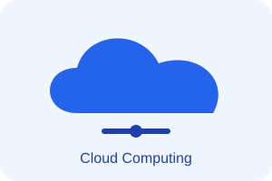

About Me
Hello! I am a Software Engineering student.
What is Cloud Computing?
Cloud computing is a technology that allows people to use computing resources through the internet. These resources include servers, storage, databases, and software. Instead of buying and maintaining expensive physical computers, users can access services from cloud providers such as Amazon Web Services, Microsoft Azure, and Google Cloud. Cloud computing offers many benefits. It can reduce costs because users often pay only for the resources they use. It also makes it easier to store files, access information from different devices, and increase computing capacity when needed. Today, businesses, schools, and individuals use cloud computing for many everyday activities.

Cloud Services
IaaS
IaaS provides computing infrastructure such as virtual machines, storage, and networking over the internet. Users can manage their operating systems and applications. An example is Amazon EC2.
PaaS
PaaS provides a platform for developers to build, test, and deploy applications without managing the underlying infrastructure. An example is Google App Engine.
SaaS
Software as a Service.
Deployment Information
SaaS provides ready-to-use software through the internet. Users can access applications without managing servers or installing complex infrastructure. An example is Gmail.